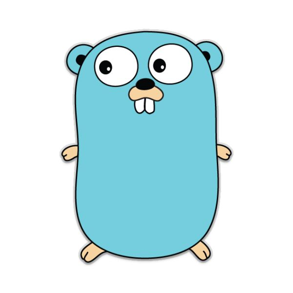

 gRPC是一个高性能、通用的开源RPC框架，基于ProtoBuf(Protocol Buffers)序列化协议开发，且支持众多开发语言。
1、相关包安装
1）protobuf
在下面的链接下载之后源码安装， https://github.com/google/protobuf 安装过程也比较简单：
./autogen.sh
./configure
./make && make install
就可以安装好。
2）安装protoc的golang插件
设置好gopath之后直接使用下面的命令即可。 我的gopath设置为：/home/helight/gopath/ go get -u github.com/golang/protobuf/protoc-gen-go #golang 插件
3)安装grpc框架
go get -u google.golang.org/grpc google.golang.org/grpc 对应的代码地址在： https://github.com/grpc/grpc-go 由于墙的原因，我们可能需要使用这个命令 go get -u github.com/grpc/grpc-go
4)其它需要依赖的库
golang.org/x/text 对应的代码地址在： https://github.com/golang/text golang.org/x/net/context 对应的代码地址在： https://github.com/golang/net google.golang.org/genproto 对应的代码地址在：github.com/google/go-genproto
以上应该都可以用go get -u 来获取，也是因为墙的原因，我们需要是github的源。
2.定义grpc.proto文件
syntax = "proto3"; //protobuf3协议
package xgrpcd;
//请求
message UserRq {
int32 id = 1;
}
//响应
message UserRp {
string name = 1;
}
//服务
service Data {
rpc GetUser(UserRq) returns (UserRp);
}
然后编译 protoc –go_out=plugins=grpc:. grpc.proto
3.server端代码
// grpc project main.go
package main
import (
"xgrpcd"
"log"
"net"
"runtime"
"strconv"
"golang.org/x/net/context"
"google.golang.org/grpc"
)
const (
port = "41005"
)
type Data struct{}
func main() {
runtime.GOMAXPROCS(runtime.NumCPU())
// 起服务
lis, err := net.Listen("tcp", ":"+port)
if err != nil {
log.Fatalf("failed to listen: %v", err)
}
s := grpc.NewServer()
xgrpcd.RegisterDataServer(s, &Data{})
s.Serve(lis)
log.Println("grpc server in: %s", port)
}
// 定义方法
func (t *Data) GetUser(ctx context.Context, request *xgrpcd.UserRq) (response *xgrpcd.UserRp, err error) {
response = &xgrpcd.UserRp{
Name: strconv.Itoa(int(request.Id)) + ":test",
}
return response, err
}
4.client端代码
package main
import (
"xgrpcd"
"log"
"runtime"
"strconv"
"strings"
"sync"
"time"
"math/rand"
"golang.org/x/net/context"
"google.golang.org/grpc"
)
var (
wg sync.WaitGroup
)
const (
networkType = "tcp"
server = "127.0.0.1"
port = "41005"
parallel = 50 //连接并行度
times = 100000 //每连接请求次数
)
func main() {
runtime.GOMAXPROCS(runtime.NumCPU())
currTime := time.Now()
//并行请求
for i := 0; i < int(parallel); i++ {
wg.Add(1)
go func() {
defer wg.Done()
exe()
}()
}
wg.Wait()
log.Printf("time taken: %.2f ", time.Now().Sub(currTime).Seconds())
}
func exe() {
//建立连接
conn, err := grpc.Dial(server + ":" + port, grpc.WithInsecure())
if err != nil {
log.Fatalf("did not connect: %v", err)
}
defer conn.Close()
client := xgrpcd.NewDataClient(conn)
for i := 0; i < int(times); i++ {
getUser(client)
}
}
func getUser(client xgrpcd.DataClient) {
var request xgrpcd.UserRq
r := rand.Intn(parallel)
request.Id = int32(r)
response, _ := client.GetUser(context.Background(), &request) //调用远程方法
//判断返回结果是否正确
if id, _ := strconv.Atoi(strings.Split(response.Name, ":")[0]); id != r {
log.Printf("response error %#v", response)
}
}
5.编译
#!/bin/bash
cd ..
export GOPATH=$GOPATH:<code>pwd</code>
echo $GOPATH
cd -
go build server.go
go build client.go
6.特别注意
1.库文件保存
因为golang.org站点国内被墙，那么相关包下载只能到github上下载，但是下载之后要把它的路径在拷贝成golang.org的路径才可以使用。
2.客户端链接
特别要注意，client.go 下 dial 时，要指定 conn, err := grpc.Dial(address, grpc.WithInsecure())，负责会报异常： did not connect: grpc: no transport security set (use grpc.WithInsecure() explicitly or set credentials)
关注「黑光技术」，关注大数据+微服务